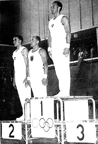

Josef Stalder (SUI)
1948 Olympic HB Gold Medalist
1950 FX and R World Champion
1952 Olympic AA Bronze Medalist

Medal Total
Olympic Games: 1
Gold, 3 Silver, 3 Bronze
World Championships: 2 Gold, 2 Silver, 1 Bronze
Stalder was born on February 6, 1919. He died on March 2, 1991.
Competition Results
1948
Olympic Games: 2nd Team, 4th AA, 1st HB, 3rd PB, 5th R
1949
SUI-HUN Dual Meet: 1st Team, 1st AA
1950
World Championships: 1st FX, 1st PH
1952
Olympic Games: 2nd Team, 3rd AA, 2nd HB, 3rd PB, 5th PH
1954
World Championships: 3rd Team, 9th AA, 2nd PH, 2nd PB
This page was created on June 19, 2011 and was last updated on October 31, 2024.
© Gymn Forum